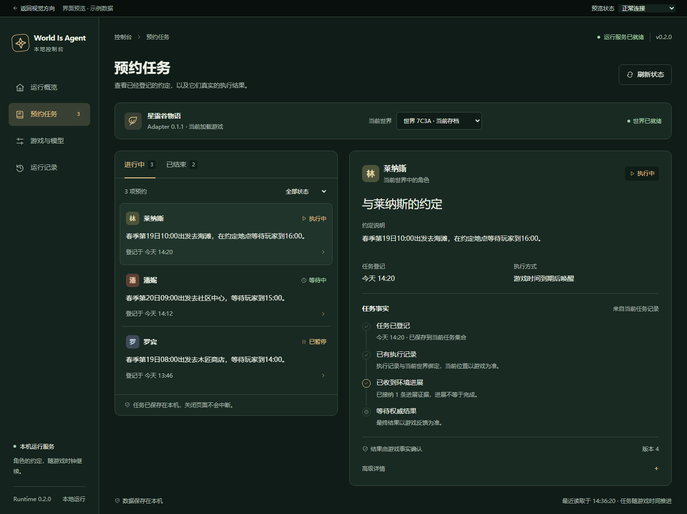
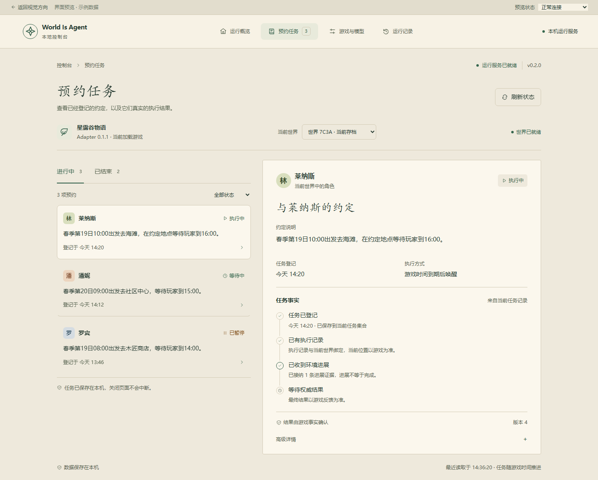
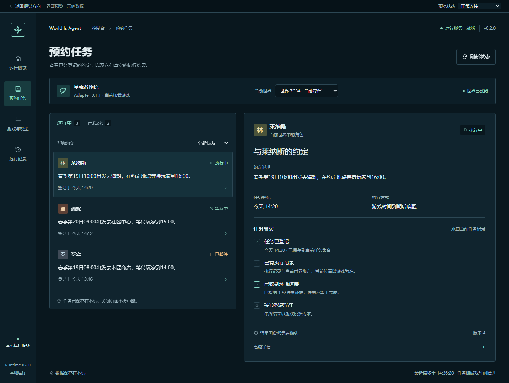
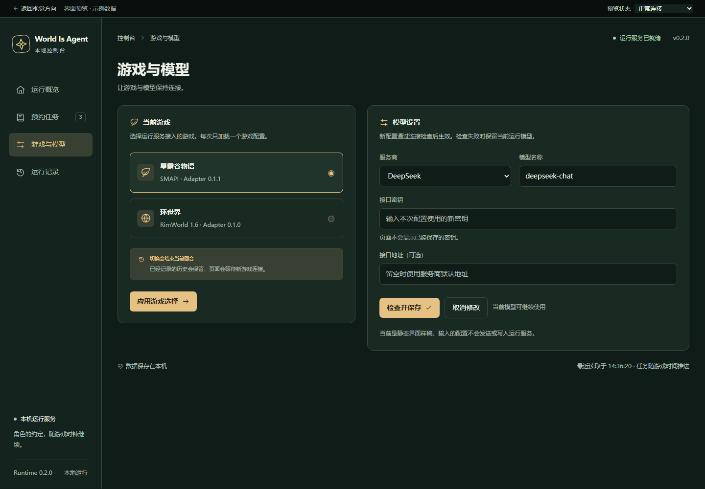

A
林间营地
深林绿与暖金色，安静的冒险游戏菜单。侧栏稳定，任务和详情并排，适合游戏时长时间打开。
四种游戏风格，相同的任务与配置功能。打开页面后，可以切换任务、查看详情、进入模型设置，并预览离线、暂停和空状态。
同一套像素窗口，随当前游戏切换场景与配色。顶部“预览游戏”可以直接比较。

深林绿与暖金色，安静的冒险游戏菜单。侧栏稳定，任务和详情并排，适合游戏时长时间打开。

温暖纸面、墨绿与书写感标题。横向导航让任务成为一页手账，中文约定和结果更有阅读感。

冷静的航行终端，青绿状态与铜橙提醒。紧凑导航和明确框线，为任务监控保留更多空间。
任务状态与世界连接分别展示；暂停有原因，结束有结果。所有主要界面采用中文，游戏、模型与高级详情延续已有操作语义。当前页面均使用示例数据，不连接实际游戏或运行服务。

打开配置样稿 →